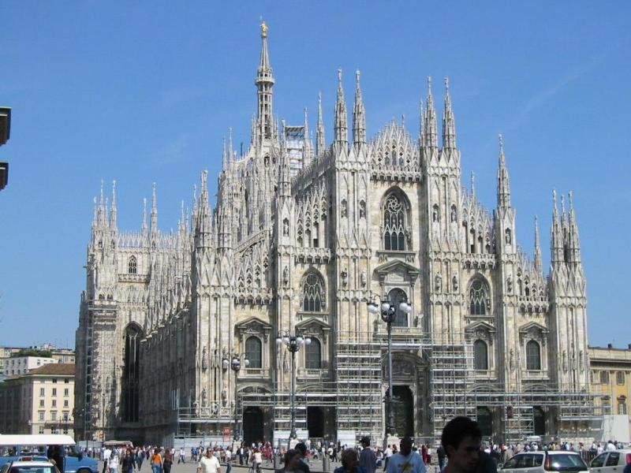
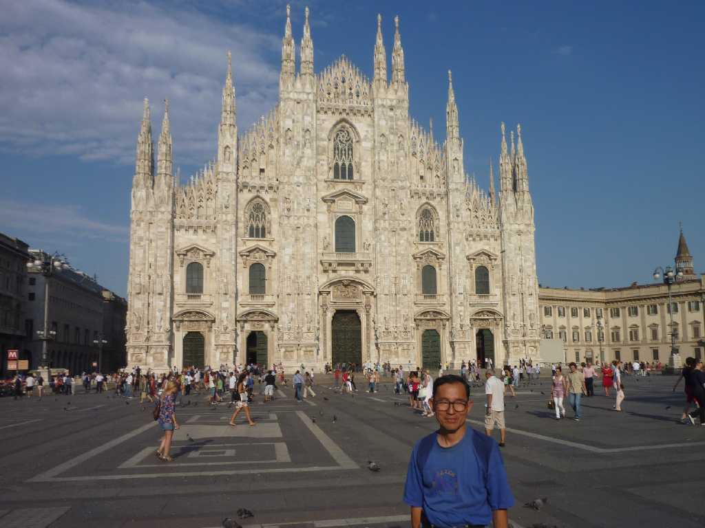
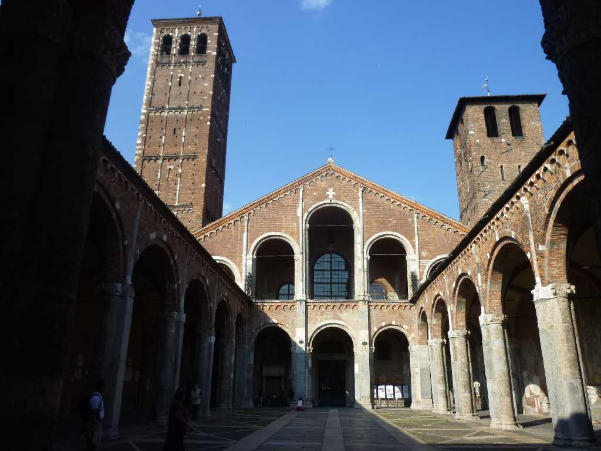
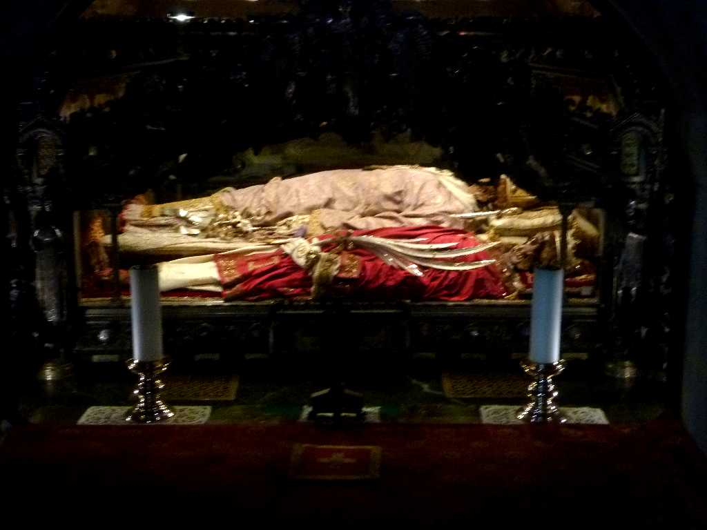
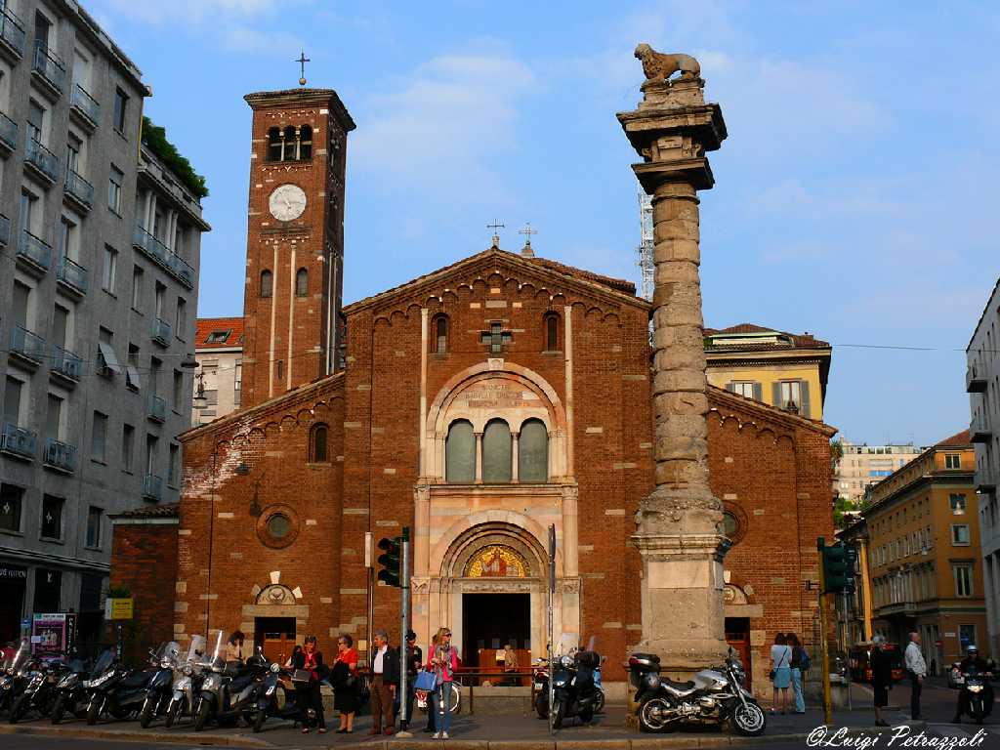

Duomo Milano
ミラノの象徴であるドゥオモはゴシック様式の聖堂としては世界一 １３８６年に着工５００年にわたる大事業の末１８８７年に完成した 高さ１０８ｍ幅９３ｍ奥行き１５８ｍ容積１１,７００立方メートルでローマのサン・ピエトロに次ぐ規模 １３５本にも及ぶ聖者像や尖塔が空に向かってそそりたつ巨大な大理石建造物の内部は巨大な円柱が天井を支えステンドグラスから差し込む光のみで薄暗く荘厳な空気に包まれる 正午になると右上のステンドグラスの窓の穴から入る光線が床に描かれた１２星座のモザイク画を照らしだす

July 6 2011 Duomo
イタリア４,５００ｋｍバスの旅で４０年ぶりのミラノ再訪問で今回は時間があり日曜日には８時半から朝一番のミサに参加

Basilica di Sant'Ambrogio

サンタンブロージョ聖堂はミラノで一番古い教会で町の守護聖人アンブロージョを奉納するため４世紀末に創られた

Chiesa di San Babila
ローマ時代の太陽神殿を９世紀に改築して創られたサンバビラ教会